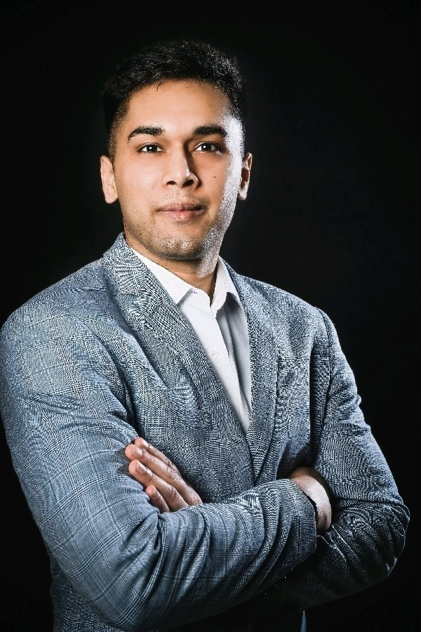

Personal Data
Name: Karanjit Singh
DOB: 02.04.1996
Place of Birth: Basti Bawa Khel, India
Nationality: Indian
Computer Skills
• C++ • Python (Machine Learning, Data Analysis) • Matlab • Ansys • MS Office • LT-Spice • Keil • SPS
Familiar with AI/ML frameworks: TensorFlow, PyTorch, scikit-learn, and OpenAI APIs
Languages
- English – C1
- Deutsch – C1
- Hindi – C1
- Punjabi – C1
Other
Swimming
- 2 national-level records
- About 200 medals in various swimming competitions
Hobbies
Proactive AI Project Manager and Technical Consultant with experience leading cross-functional teams in developing and deploying impactful AI solutions. Skilled in translating complex business needs into scalable, data-driven solutions. Experienced in end-to-end project ownership, from stakeholder alignment and project scoping to model deployment and post-launch optimization.
Work Experience
Current Role: AI Specialist
BXL digital GmbH, Frankfurt am Main | February 2023 – Present
- Created an AI-powered Apple Vision Pro app to assist people with hearing and speaking challenges; leveraged GPT for speech recognition, subtitles, and speech output.
- Deployed a machine learning–based image classification system and AI-driven recommendations for a jewelry app, driving increased user engagement.
- Implemented an AI-powered web scraper to automate data collection, reducing manual workflows and enhancing decision-making.
- Developed a GPT-powered DOG recommendation engine (FindAdog) that delivers personalized pet suggestions, elevating user engagement.
- Researched and implemented a machine learning–based fleet management and demand prediction algorithm (thesis project), improving operational planning.
Current Role: Technical Support Specialist
Smart Europe GmbH, Leinfelden-Echterdingen | February 2024 – Present
- Overseeing Over-the-Air (OTA) software updates for vehicles, ensuring smooth deployment in Europe and comprehensive reporting to guide strategic improvements.
- Provided 2nd Level Technical Support for OTA issues, initiating process refinements and 'Change Requests' to optimize platform capabilities.
- Developed OTA knowledge articles and Q&As, boosting support readiness and equipping customer-facing teams with timely updates.
- >Assisted in setting up a new Vehicle Preparation Center for OTA PDI at Antwerp, Belgium.
- Training the team, handling daily troubleshooting and administering diagnostics, 4G, and OTA activations for 2 VPCs.
Previous Role: Technical Project Manager Consultant
Smart Europe GmbH, Leinfelden-Echterdingen | February 2023 – February 2024
- Coordinated Development Leads, Delivery Leads, and Release Managers to fulfill IT project milestones, effectively managing changing scope and capacity challenges.
- Streamlined scope prioritization and timeline management to align with strategic objectives, ensuring timely deliverables and high stakeholder satisfaction.
- Led cross-team collaboration with PMO counterparts to unify timelines and spearhead business testing, improving operational efficiency and reducing delays.
- Acted as central communication conduit for Smart PMO, IT teams, and senior leadership, enhancing visibility and strategic decision-making.
Working Student
Mercedes-Benz, Rastatt | March 2020 – March 2021
Information Office Department – Rastatt, Aguascalientes & Hambach
- Contributed to the operations manual for the paperless factory, handling network jack cataloging and equipment inventory updates.
- Researched and compared various ticketing systems, supporting the Plus team’s requirements and documentation processes.
- Coordinated delivery schedules with vendors, monitored IT project progress, and provided first-level IT support for production end devices.
Internships
Mercedes-Benz | August 2019 – February 2020
Information Office Department – Rastatt, Aguascalientes & Hambach
- Assisted in designing communication cycles and KPIs for the IT work package of the paperless factory project.
- Identified new software requirements and tested hardware devices (e.g., Vuzix Smart Glasses) for production teams.
Siemens AG, Karlsruhe | April 2018 – July 2018
Various Departments
- Completed foundational courses in mechanics, metalworking, and electrical engineering.
- Gained hands-on exposure to on-site engineering processes.
Education
Mechatronics Bachelor
Hochschule Karlsruhe – Technik und Wirtschaft | 2018 – 2023
Overall Grade: 2.5
Studienkolleg
Hochschule Wismar | 2018 – 2022
Grade: 1.3
High School Graduation
Police D.A.V. Public School, Jalandhar (India) | 2018 – 2022
Grade: 89% (General university entrance qualification)